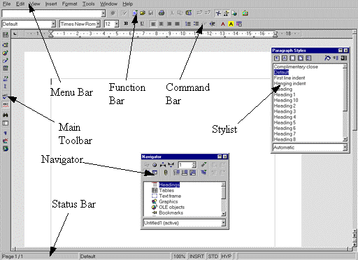
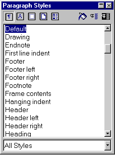
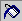

How to Write and Manage
OpenOffice.org text documents
using Common Features and Styles
provided by
the OpenOffice.org Documentation Project
Table of Contents
1. Introduction
This how-to presumes that the reader understands some words commonly used in Office Automation applications, such as right and left clicking, cursor, pop-up, and dialog window. The purpose of this document is to explain how OOo Writer works, through some simple examples, of procedures or tasks, needed to create a text document. All information presented here has been tested on a Microsoft Windows version of the OOo Office Suite; nevertheless, it is, in many cases, applicable to other platforms.
Now, let's proceed to our first contact with Writer:
the OOo word processor.
1.1 Start it up!
After Writer has been started, by selecting Text Document from the OOo group in the Start Menu on a Windows machine or by running the soffice script on Linux, you should see a main window as shown below:

There are 5 visible bars:
-
the Menu Bar that lists commands in a menu style,
-
the Function Bar that includes icons for common actions: open, save, copy, cut, paste, etc.,
-
the Command Bar with icons for formatting the text,
-
the Main Toolbar, with specific tools used during the typing phase to insert fields, forms, images, and other objects,
-
the Status Bar that displays information: the current page, current template, zoom percentage, insert or overwrite mode, selection mode, and hyperlink mode;
as well as 2 floating windows:
-
the Stylist. Used to change the style of the text with few clicks,
-
the Navigator. This tool is particularly useful in long documents with many chapters, sections, images, etc.
If the floating windows are not displayed by default, you can display them
by clicking on the Navigator icon
and the Stylist icon  that you find on the function bar.
that you find on the function bar.
Remember, whatever disaster you may cause in your document, you are always able to Reload the last saved version via the File menu, or to create a new blank one by the following:
-
type CTRL+N on your keyboard, (hold down the CTRL key and type N),
-
selecting File-New-Text Document from the Menu Bar, clicking on the New Document Icon
 on the Function Bar.
on the Function Bar.
Now, let's create a text document:
2. Typing and formatting in an OpenOffice.org text document.
If you have worked with another word processor, you will not have any problem learning the basic functions of OOo Writer. In fact, many of the same actions and short-cuts are widely used in other Office Suites. The document area where you type your text is defined with a thin gray line, the text limit guide. These margins can be modified by:
-
clicking on the Page Style icon in the Stylist,
-
selecting and right clicking on the Default style to display the context menu,
-
choosing Modify... from the context menu to display the Page Style Dialog Window,
-
setting the margins size in the Page tab of the Page Style dialog.
Warning: Modifying the Default page style means that every time you create a new document, your page will have the new Default margin settings. If your changes are to be valid only in a single document, it is best to create a new page style by repeating the previous procedure, but selecting New... in the context menu listed in step 3 above. A completely new style will be created and the new margins will be available only when you apply that style to a page.
In addition, be careful when you change the margins of your document area,
because it is possible to set them beyond the margins of your printer printing
area; if that should happen, a warning dialog will pop up to alert you.
The blinking cursor shows where your text will be inserted if you type something. Try to type a sentence like: Hello World! (It's a classic, isn't it?)
It will be written with the default font and style. Normally, when you type text in your document before another piece of text, the already present section will be moved to the right by the the new insertion. However, this behavior may not be useful in some situations. For example, when you want to overwrite some words without using the deletion key on your keyboard, you can switch to an overwriting mode by left clicking on the INSRT box in the Status Bar. The wording shown in the Status bar will change to OVER. (The Insert key will also toggle these modes.) Now, whatever you type will overwrite any existing text in your document. To return to the insertion mode, simply repeat the left clicking on the same place in the status bar. In every new document, the cursor is located in the top left corner of your document area. If you want to start to type in a different location and you have no text inserted yet, you have 3 options:
-
You can insert many unneeded paragraphs by hitting the return key on your keyboard until you have reached the point you desire. It's a bad and unprofessional solution. You can use it only if you're very, very inexperienced.
-
You can click the Direct Cursor icon in the Main Toolbar and activate this function. This icon is a toggle, that is, its function will be active until clicked again. Moving the mouse pointer over the empty document area, you'll see a blue triangle on the left. One more click and the cursor will jump exactly to the line and position (left, middle, or right) where the triangle is.
-
Finally, you can choose Insert-Frame from the Menu Bar to insert a text box. You'll be able to locate and anchor wherever you want inside your document.
Of course, documents composed of only 2 words aren't very useful. So, type at least 2 or 3 lines of text, hitting the RETURN key on your keyboard only at the end of your paragraph. You have created a paragraph. Repeat the action again to create a 2 paragraph document. Now perhaps, you may wish to select part of the typed text to perform some action on it. A selection is a special kind of text highlighting that allows you to determine, to which part of your text will be applied a particular action you will perform. Usually, the selected text is displayed with white letters on a black background. You can select in the following ways:
-
select a single word by left clicking twice on it.
-
select a line by clicking 3 times somewhere inside it.
-
select multiple lines by left clicking once near the beginning of the text piece you want to select and dragging the mouse, without releasing the button, upwards, until you have reached the last word you want to select.
-
select text pieces that are not consecutive. Simply, select the first text section and then, with the CTRL key held down, select another section.
-
select all text by sequentially hitting CTRL+A keys on your keyboard. (Press and hold CTRL then press A.)
Hint: a powerful use of the selection function is to use it in conjunction with the Find function that you can call with the keys CTRL+F or by clicking on the Find On/Off icon in the Main Toolbar. In the 'Search for' combo box of the dialog window that will appear, you can insert a word to be searched for in your document. Clicking on the Search All button of the dialog, every occurrence of this word in your document will be found, so you'll be able to perform the formatting or editing action you wish. Pay attention to where you click to switch the focus from the Find dialog to the main document window. If you click inside the document area, all selected words will be deselected, forcing you to repeat the search. You can avoid this annoying effect by clicking somewhere on the main window title bar (the first top bar that displays your document's tittle).
You can perform four main actions on a selected test: copying, cutting, deleting, and formatting. If you wish to copy to the clipboard a piece of selected text just hit CTRL+C. Otherwise, if you wish to cut it out and copy it to the clipboard hit CTRL+X. You can paste your text back from the clipboard by hitting CTRL+V. These shortcuts are standard and they have a Function Bar icon, too.
Deleting action on a selected text is also common to other Office Suites you may have used: simply hit the deletion key, space bar, or type something to overwrite the selection. On the other hand, the formatting action in OOo is slightly different from whatever you have known until now. In fact, there are two way to format text in Writer:
-
use the tools provided from the Command Bar or Format Menu,
-
use the Stylist (see next section.)
For the time being, we'll analyse point 1 only.
You can start to modify a selected text by changing its style attributes. After having selected what you want to change, click on one of the attributes icons on the Command Bar. They transform the selected text (in sequence from left to right) into Bold, Italics, and Underlined. It is also possible to use keyboard shortcuts to get the same result:
-
CTRL+B for bold,
-
CTRL+I for Italics,
-
CTRL+U for Underlined.
A more accurate selection of text attributes can be obtained by selecting Format-Character... or Format-Paragraph... from the Menu Bar, according to the part of text you want to modify. In OOo, you have options to modify both alignment and foreground, or the background color of the text:
-
Click on one of the alignment icons on the Command Bar to modify the text alignment (left, center, right, or justified).
-
Click and hold for few seconds on one of the color icons on the Command Bar to display a color palette from which it is possible to select the colors you wish.
Hint: the color palettes can be transformed into a floating window that will remain open until you close it, by clicking on the close button in its right upper corner. To perform this action, repeat step 2 of the procedure listed above, click and hold the left mouse button on the color palette window title bar, then drag the mouse somewhere over the document area, and finally release the mouse button. This behavior is common to other pop-up windows of the Main Toolbar.
If you have executed all the procedures shown until now, you should have learned how to type and change the main attributes of your text. However, documents sometimes need a completely new "look and feel". You can get it by utilizing a new font or size in conjunction with attributes to highlight a special section of the document such as: headings, quotations, comments, and so on.
Usually, a new document default font is set to "Thorndale" or "New
Times Roman". It may happen that you do not have these fonts in your system
or you don't like them. You can change the default fonts by choosing Tools-Options
on the Menu Bar and browsing in the Options Dialog Window that will
appear, down to Text Document-Basic fonts (Western). There, you
may change the font for default, headings, lists, captions, and indexes. Unfortunately,
this solution is a very radical one, that is, it will change your fonts in every
document you create. An alternative and better way to get the same result is
to use the Change Font and Size drop-down list  that is located on the Command bar.
that is located on the Command bar.
The first, displays a preview of all fonts available in your system. To see the whole list, click on the little button with the arrow to the right of the combo box and scroll. The second, displays the height of the font itself, expressed in points. Select a word or a piece of text and try to change its font and size. As written above, it's the best way to create quick headings or other special text format.
For Linux users only: OOo can use TrueType fonts that are present
in your system, but it is able to manage other fonts that you wish to add independently,
from other applications. Run as root, the spadmin script you can find in the
OOo installation directory. With this tool you can add new fonts, and eventually,
printers.
3. The Stylist
Imagine that you have written a long composition with many sections with different headings style, and then at 4:55 PM, your office boss comes in and says: "I prefer Arial, instead of Verdana, as heading font style and Georgia, instead of Times New Roman, for the normal text. Please, change it before going home..." Oh, yes, you have 5 minutes to change tens of headings and paragraphs!
It would be a terrible nightmare, if you had not written this in your OOo Office Suite. In fact, in Writer, you can use the Stylist tool to speed your changes up!
The Stylist floating window shown below should be displayed by default when you open a new document:

If it is not displayed, click on the Stylist icon  that you can find on the function bar.
that you can find on the function bar.
We have already used it to create a new Page style in Section 1. Now, we learn more about its utilization.
The Stylist window is composed of a tool bar just below the title bar where there are 5 icons on the left to switch between different styles: Paragraph, Character, Frame, Page, and Numbering Styles; plus 3 more icons on the right which provide access to some Stylist specific Functions: Fill Format Mode, New Style From Selection, and Update style. Below this bar, there is a box where all available styles are listed. Finally, at the bottom, a combo box lets you choose different filters to display, only partially, the styles, according to the filter type you chose, for example: 'Chapter Styles' rather than 'All styles' and there is also 'Automatic'.
After this brief overview, we can go back to the example we talked about at the beginning of this section. How can we change all those headings and paragraphs in 5 minutes? If you have used the static styles as shown in section 2, it would be nearly impossible. That method is useful only when you have to format 1 or 2 headings or words, nothing more. Instead, with the Stylist styles (also called 'dynamic styles'), you have the opportunity to change several text sections or even a whole book with few mouse clicks. Let's see how it works:
-
Click on the first icon, called 'Paragraph Styles', to display all styles related to paragraphs. You will notice that there are some styles ready to use.
-
To apply them to a text you have written, you may choose between:
-
selecting the text to which you wish to apply the style, then double click on a style inside the Stylist, and that style will be immediately applied
-
clicking one time on a style in the Stylist and then clicking again on the Fill Format Mode icon . This tool will remain selected until you deselect it. The cursor will change into a blinking gray textured vertical line and the mouse pointer into a paint bucket. When you click inside a paragraph or heading, all text, in that paragraph or heading, will be modified.
-
It's easy to understand that a composition using Styles is very easy to modify
with other ready-to-use styles included in the Stylist. Of course, OOo developers
cannot know every wish of every boss all around the world; this is the reason
why there exists a practical function to modify or customize existing styles.
To modify a style:
-
Be sure to have Paragraph Styles selected, then choose the desired style by left clicking once on it. It will be highlighted.
-
Then, right click on the selected style for the context menu and choose Modify...
-
In the Dialog window you can change the attributes you wish.
-
Click OK to confirm your choice or Cancel to exit with no changes.
Hint: if you have directly modified a style in your document (applying a new font, color, size, etc.) you may update the corresponding style included in the Stylist, so that all sections formatted with that style will be automatically updated. To do so:
-
select the modified text and then click on the Update Style icon in the Stylist
or, alternately,
-
drag the selected text and drop it onto a style in the Stylist. It will be automatically updated.
To create a new style:
-
repeat step 1 listed above. Remember that your new style will inherit the features of the style you have selected so be careful when you choose it,
-
right click on the selected style to display the context menu, then choose New...,
-
type a name for the new style in the Organizer tab of the Paragraph Style Dialog Window that will appear,
-
select the name of the style that will follow in your document, the one just created. By default, a paragraph style is followed by the same style, but in some circumstances, you may prefer to adopt another way of working. For example, after a heading paragraph, you may wish to have a simple text paragraph or a lower heading style. If you select that style in this window, it will be automatically selected as soon as you hit the return key on your keyboard. It's a good way to save your time!
-
make the other changes you need to fonts, tabulation, foreground, background color, etc.
-
confirm your choice by pressing the OK button to close the dialog.
Hint: a tremendously fast way to create a new style is as follows:
-
to apply all modifications you wish in the new style to a piece of text already written in your document,
-
select it by highlighting,
-
click on the New Style from Selection icon in the Stylist, and type a name for the new style in the New Style Dialog that will appear.
Concluding, your composition will be ready in 5 minutes if:
-
You change the paragraph and heading fonts by modifying the applied styles in the Stylist as explained above. All paragraphs or headings formatted with the same style will be automatically updated!
-
In case of more massive changes, and subsequently of more pretentious bosses!, you can create a completely new style, then apply it where needed through the Fill Format Mode.
4. Opening, saving, and printing a text document in the OpenOffice.org Suite
The opening, saving, and printing of files are the most common actions in a word processor, and therefore, they have to be very easy and accessible. The OOo Office suite gives you several alternatives.
When you want to open a document file, you can:
-
press CTRL+O on your keyboard,
-
select File-Open from the Menu Bar,
-
click the Open File icon on the Function Bar.
Whatever you choose to do, an Open File Dialog Window will displayed. There you can browse to the document file you wish to open.
Hint: The actions listed above are valid only when an OOo text document window is already open. However, it would be a waste of time to open a blank document only to open another file; so, the Windows OOo version has implemented a "Quick Starter". It is a program that starts when your system starts and can be accessed through the little butterfly icon you should see near the bottom right corner of your display. Double click on it and a Templates and Documents Dialog Window will appear. In it, you'll be able to select a document and to open it directly. Right clicking the same icon will bring up a simpler style of Open File Window.
On the other hand, if you want to save a document, you need to:
-
press CTRL+S on your keyboard,
-
choose File-Save from the Menu Bar,
-
click the Save icon on the Function Bar.
Once again, whatever you choose, the Save File Dialog Window will be displayed.
Warning: if your document has not been modified from the last time
it has been saved, the save icon will be grayed
and you will not able to save it again, unless you use the Save as...
feature.
Now, we'll discuss how to print your documents.
Since this How-To has been tested on a Windows OS, the following content will describe the interaction between the Windows' printing system and OOo. If you are a Linux or Solaris user, please refer to your printer driver system to learn how to add a printer and how to use it with OOo; however, many OOo internal dialog windows are equal on all platforms.
Before printing, you have to set your default printer. Choose File-Printer Settings... from the Menu Bar. In the Printer Setup Dialog Window that will be displayed, your default printer should appear in the combo box called 'Name'. If it is not installed, you have to set it up from outside of OOo Suite, through your system printing tools. You will be able to change some of the properties of your printer by clicking the 'Properties' button. This first phase has to be done once and then your printer will be available, with the chosen settings, to all OOo applications.
After having checked your printer's settings you are ready to print; however,
it's a good habit to check how the document will look when printed, before printing.
Writer gives you a useful 'Page Preview' feature. Select File-Page
Preview from the menu bar to switch to the Page Preview Mode. In
this mode you will see your document as it will be printed, but with a special
'page to page' view. You can also, simultaneously, see 4 pages by clicking on
the Page Preview: Four pages icon
that you see in the modified Object bar just above your document.You can
simply zoom in and out with the Preview Zoom icon  .
The preview page mode is not only important to see how your document looks,
but also to save paper, and therefore, more trees! In fact, there exists the
Print Page view feature ,
that allows you to print exactly what you are seeing in the Preview Mode,
this is to say 2 or 4 pages a time! When you are done with the preview of your
document, you can directly print it by clicking on the Print File Directly
icon
.
The preview page mode is not only important to see how your document looks,
but also to save paper, and therefore, more trees! In fact, there exists the
Print Page view feature ,
that allows you to print exactly what you are seeing in the Preview Mode,
this is to say 2 or 4 pages a time! When you are done with the preview of your
document, you can directly print it by clicking on the Print File Directly
icon  ,
close the Preview Page Mode by deselecting the Page Preview icon
,
close the Preview Page Mode by deselecting the Page Preview icon
 displayed in the Object Bar, or by double clicking on a Previewed page returning
to that page in the editor.
displayed in the Object Bar, or by double clicking on a Previewed page returning
to that page in the editor.
If you wish, you still have the opportunity to modify some printing features, before printing your document with the following:
-
press CTRL+P on your keyboard,
or
-
select File-Print... from the Menu Bar.
The Printer Dialog Window will appear, in which you can choose how many copies of your document you wish to print, which pages, where the printing output is to be directed (printer or file), and other properties that you can access with the 'Options...' button you see to the left of the window. When you click the OK button in this window, your document will be sent to your printer or to the file you have chosen.
5. Credits
Author : Gianluca Turconi
Thanks to : Richard Holt, great proof reader and OOo contributor
Intgr by : N/A
Last modified : February 10, 2002
Contacts: OpenOffice.org Documentation Project http://documentation.openoffice.org/index.html
Translation : N/A